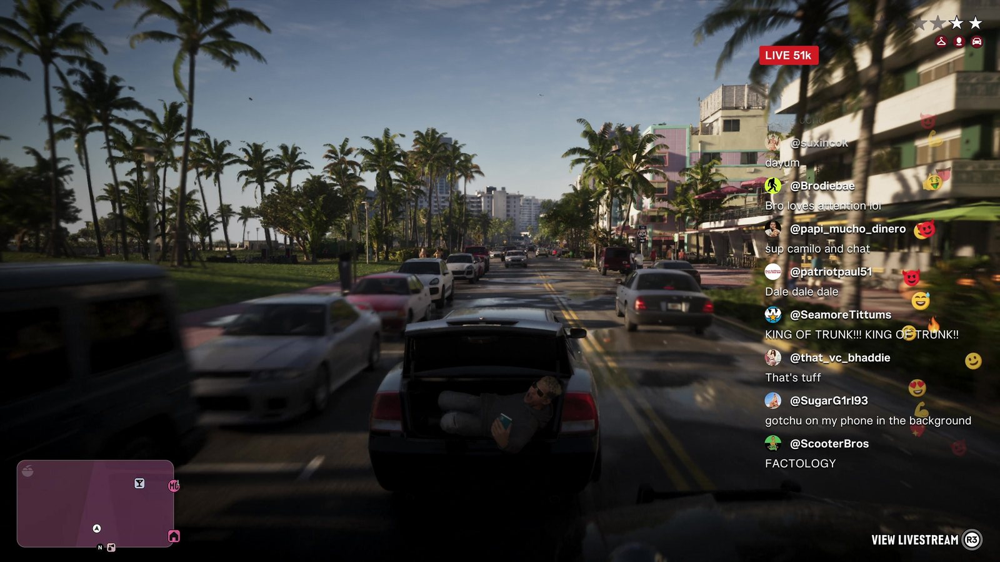
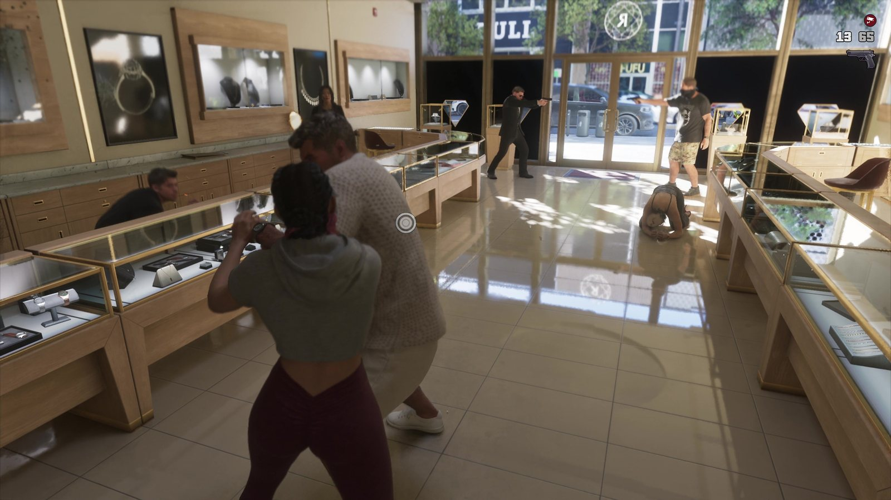
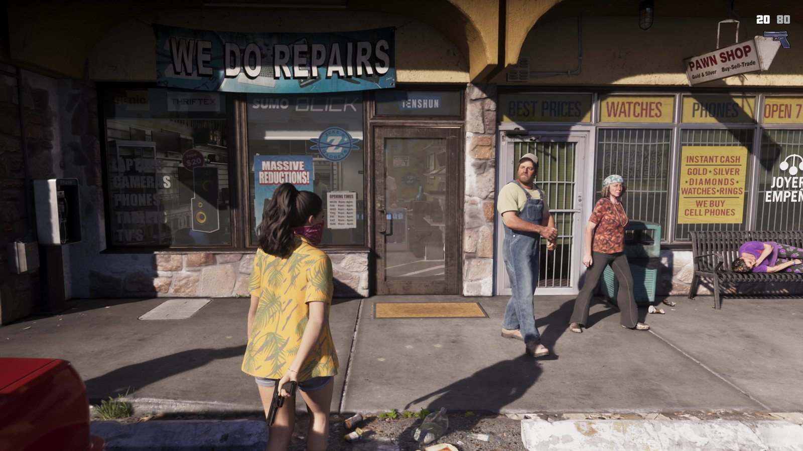

Что игроки заметили в «Расширенном показе» GTA 6
Обновлено:

- Игроки на Reddit разобрали, как ведут себя NPC: охранник сдаётся при численном перевесе.
- Прохожие реагируют на вооружённых героев спокойнее и естественнее, чем в GTA 5.
- В игре есть прямые эфиры: в кадре — стрим на 51 тысячу зрителей из багажника машины.
- Главный спор: по словам блогера с превью, на обычной PS5 игра идёт в 30 fps.
Прошёл месяц — а видео всё смотрят
«Расширенный показ» вышел 27 августа, но сообщество до сих пор находит в нём новое. Самые обсуждаемые находки — не взрывы и не погони, а мелочи: как ведут себя случайные люди, что показывает интерфейс, какие шутки спрятаны в углах экрана.
Охранник, который хочет жить
На отметке около 18:00 идёт ограбление ювелирного магазина. Игроки в сабреддите r/GTA6 обратили внимание на охранника: видя, что нападающих больше, он не геройствует, а сдаётся. А на 17:56 прохожие рядом с вооружённой героиней не разбегаются с криками, а настороженно оглядываются и спокойно отходят.

В комментариях это назвали «гораздо естественнее, чем раньше». В GTA 5 любая стрельба превращала улицу в панику по одному сценарию. Здесь, если судить по кадрам, NPC оценивают ситуацию.
Честная оговорка, которую делает и Notebookcheck: Rockstar не подтверждала, что это новая система поведения. Сцена может быть поставлена специально для ролика. Проверим 19 ноября.

Король багажника
Самый смешной кадр видео — 18:24. Машина едет по набережной, багажник открыт, в нём лежит парень с телефоном и ведёт прямой эфир. В углу экрана — плашка «LIVE 51k» и чат:
«KING OF TRUNK!!! KING OF TRUNK!!»
@SeamoreTittums, чат стрима в GTA 6
«sup camilo and chat»
@papi_mucho_dinero, там же — похоже, стримера зовут Камило
Внизу — подсказка «View Livestream (R3)»: эфир можно открыть на весь экран. Игроки сравнили это с соцсетью Lifeinvader из GTA 5 — только теперь соцсети живут прямо поверх игры. Rockstar продолжает старую традицию: высмеивать интернет изнутри интернета.
Спор о 30 fps
Самая горячая тема не из видео, а вокруг него. Блогер Davy Jones, побывавший на превью, сообщил, что на обычной PS5 игра сейчас работает в 30 кадрах в секунду. Rockstar официально частоту кадров не называла.
- «30 fps — это нормально для такого мира». RDR2 на консолях тоже шла в 30, и никто не бросил её из-за этого.
- «В 2026 году 30 fps — стыдно». Многие игры предлагают режим 60 fps, и игроки ждут выбора.
- «Ждём PS5 Pro». Часть сообщества надеется, что Pro-версия даст более плавную картинку. Официально это не подтверждено.
Сам «Расширенный показ», напомним, заканчивается плашкой «Captured on PS5». Что это значит для графики в трейлерах, мы разбирали в мифе Миф: трейлеры GTA 6 — это пререндер, в игре так не будет.
Настроение
Месяц спустя сообщество впечатляют не масштабы, а детали: люди, которые ведут себя как люди. Если 19 ноября NPC окажутся такими же живыми, как в ролике, это будет главный шаг вперёд по сравнению с GTA 5. А вы что заметили в видео? Все сцены по минутам — «Расширенный показ» GTA 6: что показали за 26 минут — с таймкодами.
Источники: Notebookcheck (02.09.2026, обсуждение r/GTA6); TechSpot (Davy Jones о 30 fps); Rockstar Games — «Grand Theft Auto VI: An Extended Look», 17:56, 18:00, 18:24.